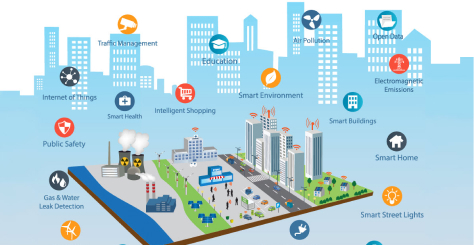
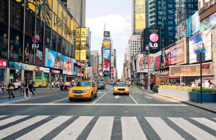
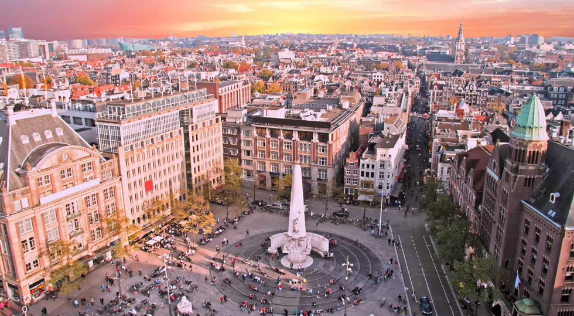
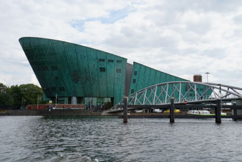

O que são smart cities?
Segundo a união Européia, Smart Cities são sistemas de pessoas interagindo e usando energia, materiais, serviços e financiamento para catalisar o desenvolvimento econômico e a melhoria da qualidade de vida. Esses fluxos de interação são considerados inteligentes por fazer uso estratégico de infraestrutura e serviços e de informação e comunicação com planejamento e gestão urbana para dar resposta às necessidades sociais e econômicas da sociedade. De acordo com o Cities in Motion Index, do IESE Business School na Espanha, 10 dimensões indicam o nível de inteligência de uma cidade: governança, administração pública, planejamento urbano, tecnologia, o meio-ambiente, conexões internacionais, coesão social, capital humano e a economia.

Smart Cities pelo mundo
Nova York, Estados Unidos
Segundo a união Européia, Smart Cities são sistemas de pessoas
interagindo e usando energia, materiais, serviços e financiamento para
catalisar o desenvolvimento econômico e a melhoria da qualidade de vida.
Esses fluxos de interação são considerados inteligentes por fazer uso
estratégico de infraestrutura e serviços e de informação e comunicação
com planejamento e gestão urbana para dar resposta às necessidades
sociais e econômicas da sociedade. De acordo com o Cities in Motion
Index, do IESE Business School na Espanha, 10 dimensões indicam o nível
de inteligência de uma cidade: governança, administração pública,
planejamento urbano, tecnologia, o meio-ambiente, conexões
internacionais, coesão social, capital humano e a economia.

A instalação de sensores de presença em 90 escolas da cidade em 2017
deve economizar 17 milhões de kWh, reduzindo as emissões de gases do
efeito estufa e economizando mais de US$ 2 milhões por ano. No trânsito,
desde 2010 o Departamento de Transportes passou a gerenciar o tráfego da
cidade a partir de dados em tempo real. Quase 300 sensores e câmeras são
capazes de fornecer estatísticas e modificar os padrões dos semáforos em
uma ampla região, resultando em uma melhora de 10% nos tempos de viagem
desde que o programa foi implementado.

O que esperar de uma cidade onde as bicicletas são o principal meio de transporte? Com quase 900 mil habitantes, a cidade de Amsterdã é pioneira na Europa quando o assunto é investir em tecnologia e sustentabilidade. Funcionando sob o modelo de cidade inteligente, a capital dos Países Baixos possui uma plataforma que oferece suporte e incentivo para que instituições, empresas e cidadãos desenvolvam projetos verdes, que podem beneficiar a qualidade de vida urbana de todos os habitantes.
O departamento de infraestrutura de Amsterdã desenvolveu produtos e serviços inovadores no campo da mobilidade urbana, disponibilizando dados sobre o tráfego e as opções de transporte disponíveis, além de disponibilidade de estacionamento, táxis e ciclovias. A cidade também investe no desenvolvimento de tecnologias móveis, como o Appening Amsterdam, um aplicativo que indica locais para se divertir na noite e o Drive Carefully, que alerta motoristas quando estão dirigindo perto de uma escola para que reduzam a velocidade.
Além disso, várias casas e edifícios foram adaptadas com insulação eficiente para reduzir gastos de energia, interruptores de luz de escurecimento automático, medidores inteligentes de energia elétrica e lâmpadas LED de consumo ultra baixo.
